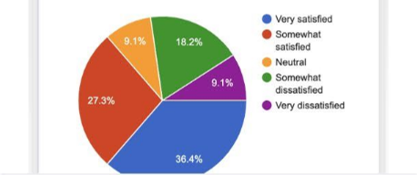

Cuando necesites explorar
Elige técnicas cualitativas.

Primero debes definir qué necesitas saber y después debes elegir qué hacer para saberlo.
Cuando necesites explorar
Elige técnicas cualitativas.
Cuando necesites evaluar
Elige tests de usabilidad.
Cuando necesites medir
Elige técnicas cuantitativas.

No hay técnicas buenas o malas, sólo hay técnicas adecuadas o inadecuadas según la investigación. Sin embargo, no basta con elegir la técnica adecuada: también hay que elegirla en el momento adecuado del producto para evitar la aplicación de métodos que no aportan valor en ese momento concreto, obtener datos relevantes y tomar decisiones alineadas con necesidades reales.